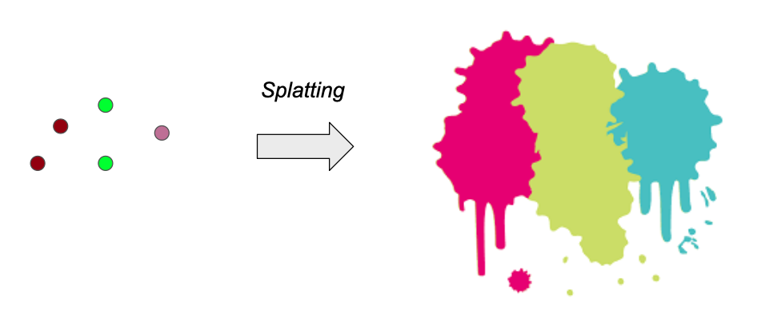
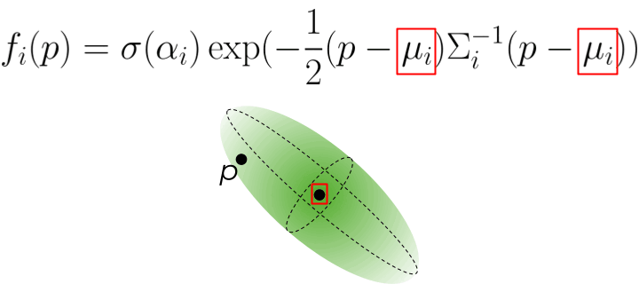
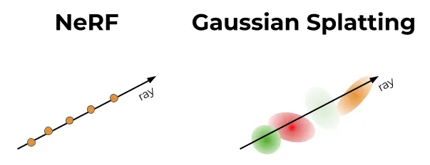
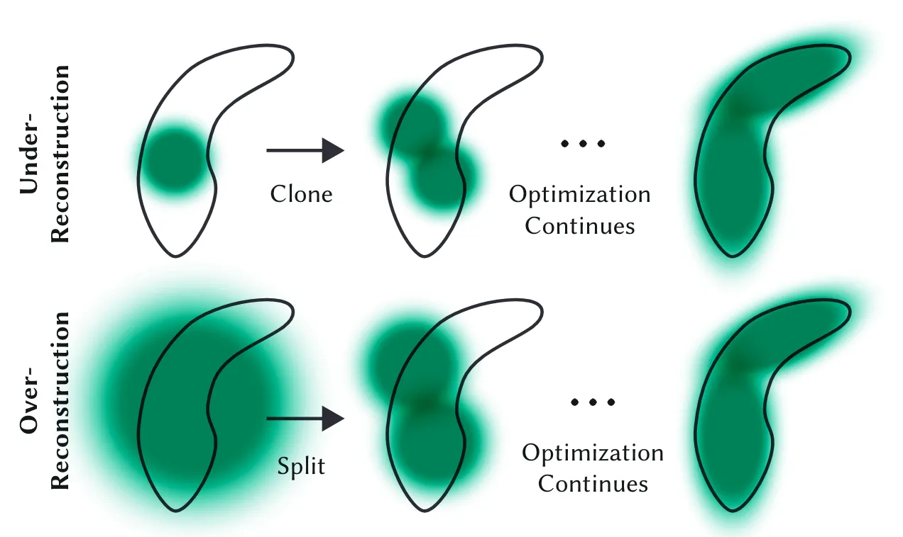
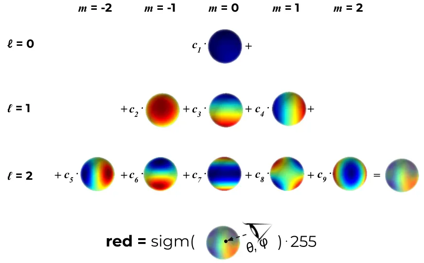
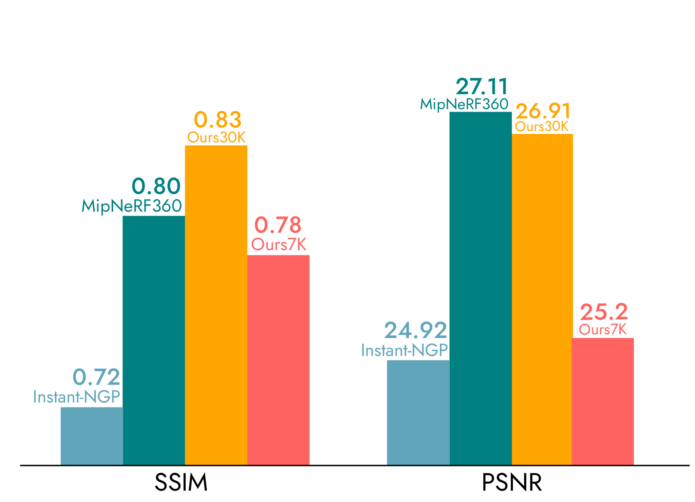
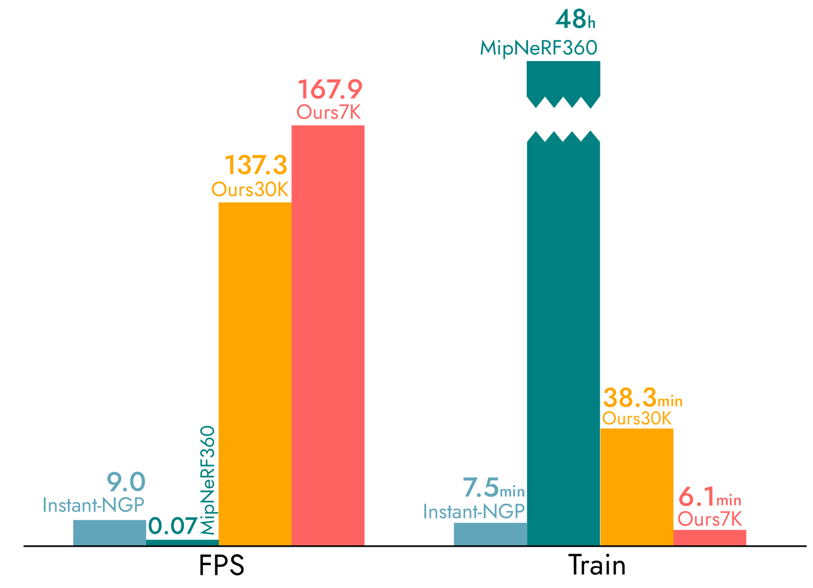

18 3D Gaussian Splatting
3D Gaussian Splatting (Kerbl et al., 2023) represents a scene as a collection of \(K\) 3D Gaussians — an explicit, rasterizable representation that achieves real-time rendering at quality competitive with NeRF.

18.1 Representation
Each splat \(\mathcal{G}_i\) is parameterized by:
| Parameter | Dims | Meaning |
|---|---|---|
| Mean \(\boldsymbol{\mu}_i\) | 3 | Spatial location |
| Covariance \(\boldsymbol{\Sigma}_i\) | 7 | Shape and orientation |
| Opacity \(\alpha_i\) | 1 | Transparency |
| Color \(\mathbf{c}_i(\mathbf{d})\) | 48 (SH) | View-dependent appearance |
The covariance is factored as: \[\boldsymbol{\Sigma}_i = \mathbf{R}_i \mathbf{S}_i \mathbf{S}_i^\top \mathbf{R}_i^\top\] where \(\mathbf{S}_i = \text{diag}(s_1, s_2, s_3)\) (3 scale params) and \(\mathbf{R}_i\) is encoded as a unit quaternion \(\mathbf{q}_i = (q_0, q_1, q_2, q_3)\) (4 params), converted to a rotation matrix by: \[\mathbf{R}(\mathbf{q}) = \begin{bmatrix} 1-2(q_2^2+q_3^2) & 2(q_1q_2-q_0q_3) & 2(q_1q_3+q_0q_2) \\ 2(q_1q_2+q_0q_3) & 1-2(q_1^2+q_3^2) & 2(q_2q_3-q_0q_1) \\ 2(q_1q_3-q_0q_2) & 2(q_2q_3+q_0q_1) & 1-2(q_1^2+q_2^2) \end{bmatrix}\] This decomposition guarantees \(\boldsymbol{\Sigma}_i\) remains positive semi-definite throughout optimization.
The influence of splat \(i\) at a 3D point \(\mathbf{x}\) is: \[\mathcal{G}_i(\mathbf{x}) = \alpha_i\,\exp\!\left(-\tfrac{1}{2}(\mathbf{x} - \boldsymbol{\mu}_i)^\top \boldsymbol{\Sigma}_i^{-1}(\mathbf{x} - \boldsymbol{\mu}_i)\right)\]

18.2 Projection to Image Plane
To render, each 3D Gaussian is projected to a 2D Gaussian on the image plane. The mean \(\boldsymbol{\mu}_i\) projects through the standard perspective pipeline with view transform \(\mathbf{W}\) and intrinsics \(\mathbf{K}\): \[z\begin{bmatrix} u/z \\ v/z \\ 1 \end{bmatrix} = \begin{bmatrix} u \\ v \\ z \end{bmatrix} = \mathbf{K}\mathbf{W}\begin{bmatrix} \mu_x \\ \mu_y \\ \mu_z \\ 1 \end{bmatrix}, \qquad \boldsymbol{\mu}_i^{2D} = \begin{bmatrix} \mu_x^{2D} \\ \mu_y^{2D} \end{bmatrix} = \begin{bmatrix} u/z \\ v/z \end{bmatrix}\]
The covariance cannot be pushed through this nonlinear perspective division directly. Instead, it is transformed by the local linearization of the projection at \(\boldsymbol{\mu}_i\) — the Jacobian \(\mathbf{J} = \partial \boldsymbol{\mu}_i^{2D}(\boldsymbol{\mu}_i) / \partial \boldsymbol{\mu}_i\): \[\boldsymbol{\Sigma}_i^{2D} = \mathbf{J}\mathbf{W}\,\boldsymbol{\Sigma}_i\,\mathbf{W}^\top\mathbf{J}^\top\]
18.3 Tile-Based Rasterizer

Pixel color is computed by alpha compositing splats sorted front-to-back by depth: \[C(\mathbf{p}) = \sum_{i=1}^K \mathbf{c}_i(\mathbf{d})\,\hat{\alpha}_i(\mathbf{p})\prod_{j < i}\bigl(1 - \hat{\alpha}_j(\mathbf{p})\bigr), \qquad \hat{\alpha}_i(\mathbf{p}) = \alpha_i\,\mathcal{G}_i^{2D}(\mathbf{p})\]
This is exactly NeRF’s discretized volume rendering equation (Figure 17.8) in a different guise: writing the per-sample opacity as \(\hat{\alpha}_i = 1 - e^{-\sigma_i\delta_i}\), NeRF’s transmittance \(T_i = \exp(-\sum_{j<i}\sigma_j\delta_j)\) expands to the product \(\prod_{j<i}(1-\hat{\alpha}_j)\), recovering the same alpha-compositing form \(\hat{C}(\mathbf{r}) = \sum_i \mathbf{c}_i\,\hat{\alpha}_i\prod_{j<i}(1-\hat{\alpha}_j)\). 3DGS reuses this identity, replacing NeRF’s per-sample density terms \(\hat{\alpha}_i\) with projected per-splat opacities \(\hat{\alpha}_i(\mathbf{p}) = \alpha_i\,\mathcal{G}_i^{2D}(\mathbf{p})\).
Efficiency comes from a CUDA tile-based rasterizer: the image is split into \(16 \times 16\) tiles; each splat is culled to only the tiles its 2D extent overlaps. Splats are sorted once per frame by depth (GPU radix sort), enabling sequential alpha compositing per tile in parallel. Unlike NeRF, no MLP evaluation is needed per pixel.
18.4 Optimization and Adaptive Densification
Scene is initialized from the SfM point cloud (means at point locations, spherical covariances scaled to neighbor distance). Optimization by SGD on all per-splat parameters using: \[\mathcal{L} = (1 - \lambda)\,\mathcal{L}_1 + \lambda\,\mathcal{L}_{\text{D-SSIM}}, \qquad \lambda = 0.2\]
where \(\mathcal{L}_{\text{D-SSIM}} = 1 - \text{SSIM}\), and the Structural Similarity Index compares local luminance, contrast, and structure between rendered (\(x\)) and ground-truth (\(y\)) image patches: \[\text{SSIM}(x,y) = \frac{(2\mu_x\mu_y + c_1)(2\sigma_{xy} + c_2)}{(\mu_x^2 + \mu_y^2 + c_1)(\sigma_x^2 + \sigma_y^2 + c_2)}\] Combining \(\mathcal{L}_1\) (pixel-wise fidelity) with \(\mathcal{L}_{\text{D-SSIM}}\) (structural/perceptual fidelity) produces sharper results than either loss alone.
Splats are densified every \(\Delta\) steps:
- Clone: for splats with high positional gradient \(\|\nabla_{\boldsymbol{\mu}} \mathcal{L}\|\) and small scale — signals an under-reconstructed region.
- Split: for splats with high positional gradient and large scale — one large splat is split into two smaller ones.
- Prune: splats with \(\alpha_i < \varepsilon_\alpha\) are removed (too transparent to contribute).

18.5 Spherical Harmonics for View-Dependent Color
Non-Lambertian surfaces (glass, metals, wet pavement) appear differently from different viewing directions. For an ideal Lambertian (diffuse) surface, radiance leaving a patch is proportional to \(\cos\theta\) between the surface normal and the viewing/incident direction — radiance is independent of view angle once this cosine falloff is accounted for. Real surfaces deviate from this, motivating a richer, learned, view-dependent color model.
3DGS models view-dependent appearance via spherical harmonics — an orthonormal basis \(\{Y_l^m : S^2 \to \mathbb{R}\}\) for functions on the sphere: \[\mathbf{c}_i(\mathbf{d}) = \sum_{l=0}^{l_{\max}} \sum_{m=-l}^{l} \mathbf{k}_{lm}^{(i)}\,Y_l^m(\mathbf{d})\]
where the viewing direction \(\mathbf{d}\) is expressed in spherical angles \((\theta,\phi)\), and \(Y_l^m\) is the real spherical harmonic of degree \(l\) and order \(m\) (\(-l \le m \le l\)): \[Y_l^m(\theta,\phi) = \frac{(-1)^l}{2^l\,l!}\sqrt{\frac{(2l+1)(l+m)!}{4\pi(l-m)!}}\,e^{im\phi}(\sin\theta)^{-m}\frac{d^{l-m}}{d(\cos\theta)^{l-m}}(\sin\theta)^{2l}\]
For \(l = 0\): \(Y_0^0\) is constant — Lambertian (view-independent) color. Higher degrees capture view-dependent specularities. 3DGS uses \(l_{\max} = 3\): \((l_{\max}+1)^2 = 16\) coefficients per color channel × 3 channels = 48 color params per splat.

18.6 NeRF vs. 3D Gaussian Splatting
| Property | NeRF | 3D Gaussian Splatting |
|---|---|---|
| Representation | Implicit (MLP) | Explicit (Gaussians) |
| Scene initialization | Random | SfM point cloud |
| Training time | Hours | Minutes |
| Rendering speed | ~1 fps | Real-time (30–120 fps) |
| Peak PSNR | Slightly lower | Competitive or better |
| Storage | ~50 MB (MLP weights) | ~700 MB (millions of splats) |
| Editability | Hard | Easier (move/remove splats) |
| Novel scene generalization | Possible with conditioning | Not directly |


Interview Insight: “When would you choose NeRF over Gaussian Splatting?” NeRF is more flexible for generalization across scenes (e.g. conditional NeRF, zero-shot novel views) because the MLP is a continuous prior that can be conditioned. 3DGS is the right choice for single-scene reconstruction where real-time rendering matters.
Limitations: - Storage: millions of splats → checkpoint files in the hundreds of MB - Heuristic densification: split/clone rules are not theoretically grounded - No inductive bias: unlike an MLP, the Gaussian set does not smooth out missing regions or view inconsistencies
18.7 Interview Questions
Q: How does 3D Gaussian Splatting achieve real-time rendering while NeRF cannot?
NeRF requires \(H \times W \times N\) MLP evaluations per frame (one per sampled point per ray). 3DGS replaces MLP evaluation with: (1) projecting Gaussians to 2D ellipses (algebraic, no MLP), (2) sorting by depth once per frame (GPU radix sort), (3) alpha compositing per tile in parallel. The bottleneck is GPU memory bandwidth, not sequential computation, enabling 30–120 fps.
Q: Why is the covariance factored as \(\boldsymbol{\Sigma} = \mathbf{R}\mathbf{S}\mathbf{S}^\top\mathbf{R}^\top\) rather than optimized directly?
A covariance matrix must be symmetric positive semi-definite (SPSD). Optimizing the 9 entries of \(\boldsymbol{\Sigma}\) directly does not guarantee SPSD, so gradients can push the matrix into an invalid state. Factoring into a rotation \(\mathbf{R}\) (quaternion) and diagonal scale \(\mathbf{S}\) ensures the result is always valid and reduces the free parameters from 9 to 7.
Q: Why does 3DGS need SfM initialization while NeRF does not?
NeRF is an implicit MLP that can be initialized randomly — gradients flow through the volume rendering integral to any part of the scene. 3DGS splats are localized: a splat initialized far from any surface will have zero gradient because its 2D projection does not overlap any training pixel. SfM provides a point cloud that places splats near the actual scene surfaces, giving the optimizer a valid starting point. Without it, most splats never receive gradient signal.